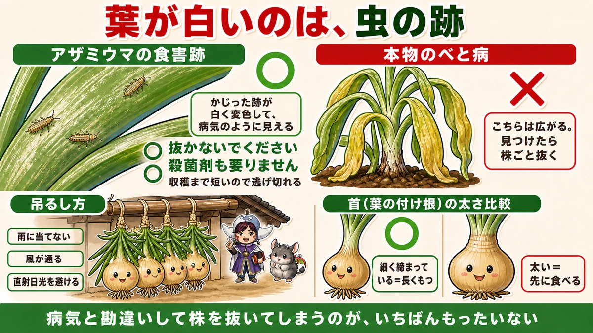
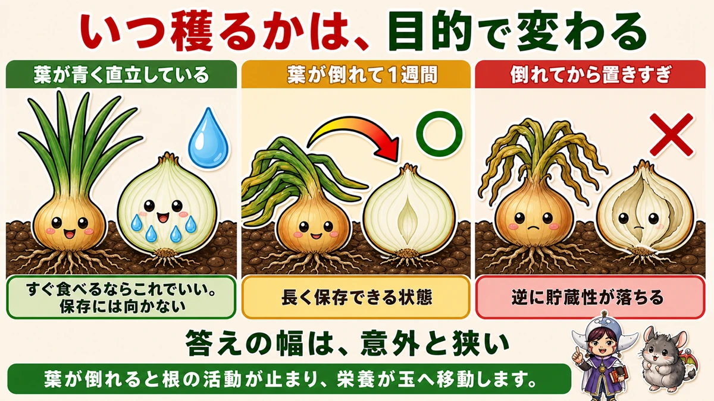
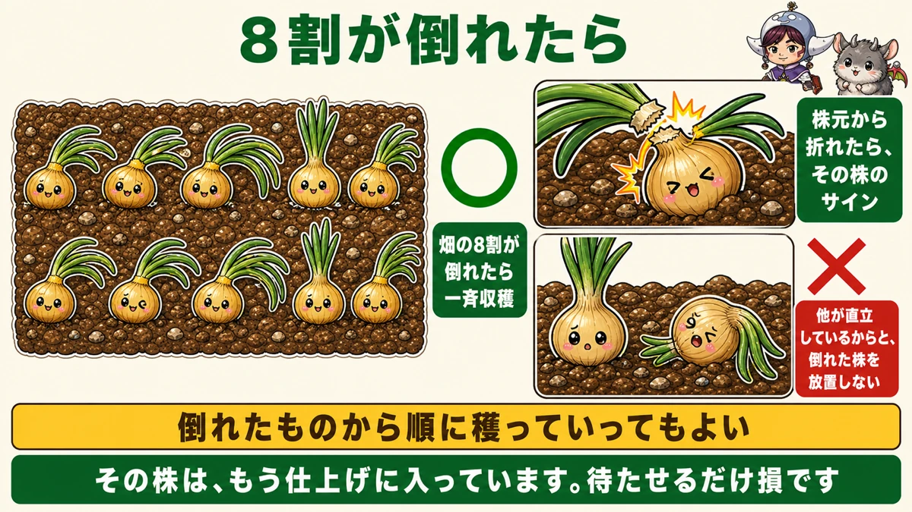
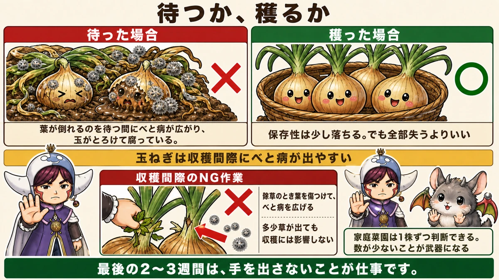

葉が白くなっても病気ではありません🧅 抜かないでください
🗨️「葉が白くなってきた。病気だろうか」
🗨️「いつ抜けばいいのか分からない」
🗨️「保存していたら、すぐ芽が出てしまった」
どうも、8150（えいこう）です🌱 家庭菜園歴8年、理科の教員免許を持っていて、有機・無農薬で野菜を育てています。
秋に植えた玉ねぎが、5月下旬から6月に穫れます。
長い長い栽培期間の、最後の1か月です。ここで判断を間違えると、8か月の努力が保存中に腐って終わります。
先に、この記事でいちばん言いたいことを言っておきます。
★葉が白くなっても、病気ではありません。抜かないでください。
これを知らずに、健康な株を抜いてしまう方がいます。まずそこからお話しします☺️
★葉が白いのは、虫の跡です
収穫前になると、よく起きます
5月に入ると、玉ねぎやにんにくの葉が★白く透けたように変色してくることがあります。
かすれたような、色が抜けたような見た目です。★病気にしか見えません。
そして多くの方が、こうします。
- 殺菌剤をたくさん使う
- 広がらないように、その株を抜いて捨てる
★どちらも必要ありません。

犯人はアザミウマ
★これは、アザミウマという虫の食害の跡です。
とても小さい虫で、探すのは簡単ではありません。ただ、よく見れば肉眼でも確認できます。
★葉の表面をかじって、そこが白く変色します。病気の斑点に見えるのは、そういう理由です。
★この時期なら、逃げ切れます
そして大事なのがここです。
★この時期のアザミウマは、重大な被害になりません。
理由は簡単で、★収穫までの期間がもう短いからです。玉はすでに太っていて、あとは仕上げるだけ。多少葉が食われても、間に合います。
★病気と勘違いして株ごと抜いてしまうのが、いちばんもったいない。私も最初の年、これをやりかけました。
本当の病気は、別にあります
もちろん、本物の病気が出ることもあります。それがべと病です。
★白い変色ではなく、葉が黄色っぽくなって、やがてぐったり垂れてきます。こちらは広がります。
★見つけたら、その株ごと早めに抜いてください。この話は後でもう一度出てきます。
★★いつ穫るかは、目的で変わる
玉ねぎは、外から見えます
じゃがいもと違って、玉ねぎには大きな利点があります。
★玉が太っているかどうか、地上から見えます。
マルチの上に玉が張り出してくるので、大きさが分かる。★掘ってみないと分からない、ということがありません。
だから★ある程度の大きさになっていれば、いつでも穫れます。

すぐ食べるなら、倒れる前でもいい
★すぐに食べるなら、葉が倒れる前でも構いません。
玉が十分太っていれば、それで収穫できます。新玉ねぎとして、みずみずしいうちに食べる。これはこれで、この時期にしか味わえないものです。
★★長く保存するなら、倒れてから1週間
一方、長く置いておきたい場合は違います。
★葉が倒れてから、さらに1週間待ってください。
なぜ待つのか。この1週間で、玉ねぎの中で大事なことが起きています。
葉が倒れると、根が止まる
★葉が倒れると、根の活動が止まります。
水や養分を吸い上げるのをやめる。すると、株全体が「仕上げ」に入ります。
- ★葉に残っていた栄養が、玉のほうへ移動する
- ★葉の内部がスカスカになる
- ★玉の水分が減って、乾きはじめる
この結果どうなるか。★収穫したときの水分量が少なくて済みます。
★水分が少ない玉ねぎほど、長く保存できます。だから、この1週間を待つ価値があります。
そしてもうひとつ。★倒れてからも、玉はまだ太ります。待つあいだに大きくなります。
★青いまま穫ると、腐ります
逆に、★葉が青々と直立したまま収穫するとどうなるか。
★玉の付け根に水分が多すぎて、そこから腐りやすくなります。
保存には向きません。★穫ったら早めに食べてください。
★でも、待ちすぎてもいけない
ここが難しいところです。
★倒れてから長く置きすぎると、今度は貯蔵性が落ちます。
- 早すぎる → 水分が多くて腐る
- ★ちょうどいい → 倒れてから1週間
- 遅すぎる → 貯蔵性が落ちる
★答えの幅が、意外と狭いんです。
★8割ルール
畑の8割が倒れたら
たくさん植えている場合の目安です。
★畑の株の8割ほどの葉が倒れてきたら、一斉に収穫。

これが分かりやすい基準になります。全部が倒れるのを待つ必要はありません。
★倒れた株から順に、でもいい
もうひとつのやり方があります。
★倒れたものから、順番に収穫していく。
★株元からポキッと葉が折れたら、それがその株のサインです。
そして大事なことを、ひとつ。
★他の株がまだ直立しているからといって、倒れた株を放置しないでください。
その株は、もう仕上げに入っています。★待たせるだけ損です。
★★べと病とのにらみ合い
収穫間際が、いちばん危ない
玉ねぎには、やっかいな性質があります。
★収穫間際に、べと病が出やすいんです。

途中まで順調でも、最後の数週間で一気に広がることがあります。★8か月育てて、最後の2週間で失う。これがいちばんつらい。
待つか、穫るか
ここで判断が必要になります。
★葉が倒れるのを待っていると、べと病が広がって、玉がとろけて腐ります。
だから、こう考えてください。
★べと病が出はじめていて、玉がある程度太っているなら、葉が倒れていなくても穫ってしまう。
★保存性は少し落ちます。でも、腐って全部失うよりずっといい。
★家庭菜園の、いちばんの強み
そしてここで、家庭菜園の利点が出ます。
★1株ずつ、状況を見ながら穫れる。
農家さんは、そうはいきません。何千株もあるものを、1つずつ見て回ることはできない。★どこかで一斉に収穫を決めるしかありません。
でも家庭菜園は、10株、20株です。★この株はもう穫る、この株はまだ待つ、と決められます。
★数が少ないことが、そのまま武器になる。数少ない、家庭菜園のほうが有利な点だと思います。
★収穫間際にやってはいけないこと
草取りを、やめてください
これは意外だと思います。
★収穫間際になったら、草取りをしないでください。
前に、玉ねぎの記事で「4月にやるのは草取りだけ」とお伝えしました。★その草取りを、収穫前には止めます。
理由は、傷をつけるから
なぜか。
★草を抜くとき、玉ねぎの葉を傷つけてしまうからです。
そして★その傷口から、べと病が入ります。よかれと思ってやった作業が、病気を広げる原因になります。
★多少草が出ていても、収穫には影響しません。この時期の玉ねぎは、もう仕上げに入っています。草に負けることはありません。
★最後の2〜3週間は、見ているだけでいい。手を出さないことが仕事です。
吊るし方
葉を残して、縛る
収穫したら、保存の作業です。
- ★葉を切り落とさず、20〜30cmほど残す
- ★数本ずつ、葉のところで縛る
- ★風通しのよい日陰に吊るす
葉を残すのは、縛るためです。★吊るすことで、まわり全部に風が当たります。
★雨に当てない
置き場所の条件です。
- ★雨に当たらない（軒下など）
- ★風が通る
- ★直射日光が当たらない
じゃがいものときと同じで、★湿気と光が敵です。
★首が締まっているものが、よくもつ
見分け方をひとつ。
★葉の付け根（首）が細く締まっているものほど、長くもちます。
太いまま、みずみずしいままのものは、そこから傷みやすい。★首が太い玉ねぎは、先に食べてください。
ときどき、見る
そして最後に、じゃがいもと同じことをお伝えします。
★1個腐ると、隣に移ります。
吊るしてある玉ねぎを、ときどき下から見上げてください。★傷んでいるものを1個外すだけで、残りが助かります。
最後の1か月
この記事の要点
- ★葉が白く透けるのは病気ではない。★アザミウマの食害跡
- ★この時期なら重大な被害にならない。収穫まで短いので逃げ切れる
- ★★病気と勘違いして株を抜かない。殺菌剤も要らない
- 本物のべと病は★葉が黄色くなってぐったり垂れる。★見つけたら株ごと抜く
- ★玉ねぎは玉が太っているか地上から見える。掘らなくても分かる
- ★すぐ食べるなら、葉が倒れる前でも収穫していい
- ★★長く保存するなら、葉が倒れてから1週間待つ
- 葉が倒れると★根の活動が止まり、栄養が玉へ移動して、葉の内部がスカスカになる
- ★玉の水分が減るので、収穫後の水分量が少なくて済む＝長持ちする
- ★倒れてからも玉は太る
- ★青いまま穫ると、付け根の水分が多すぎて腐りやすい
- ★倒れてから置きすぎると、逆に貯蔵性が落ちる。答えの幅は狭い
- ★畑の8割が倒れたら一斉収穫。または★倒れた株から順に
- ★株元からポキッと折れたら、その株のサイン
- ★倒れた株を、他が直立しているからと放置しない
- ★★玉ねぎは収穫間際にべと病が出やすい
- ★べと病が出ていて玉が太っているなら、倒れていなくても穫る
- ★★家庭菜園は1株ずつ判断できる。数が少ないことが武器になる
- ★★収穫間際に草取りをしない。★葉を傷つけてべと病を広げる
- ★最後の2〜3週間は、手を出さないことが仕事
- 保存は★葉を20〜30cm残して数本ずつ縛り、風通しのよい日陰に吊るす
- ★雨に当てない。★直射日光も避ける
- ★首が細く締まっているものほど長くもつ。★太いものから先に食べる
- ★1個腐ると隣に移る。ときどき見上げて、傷んだものを外す
全部やろうとしなくて大丈夫です。まずは畑に出て、倒れている株がないか数えてみてください。★8割まで来ていたら、今週末が収穫です🧅
次回は、梅雨の話。雨の季節に病気を出さないための、備え方をお話しします☔
ここまで読んでくださって、ありがとうございました。
麻ひも
2個ずつ葉を結んで吊るします。葉を10cmほど残して切るのがコツです。
![[商品価格に関しましては、リンクが作成された時点と現時点で情報が変更されている場合がございます。]](https://hbb.afl.rakuten.co.jp/hgb/56bc2b48.a5f55627.56bc2b49.c4ff0d7c/?me_id=1372205&item_id=10005292&pc=https%3A%2F%2Fthumbnail.image.rakuten.co.jp%2F%400_mall%2Faudiofuntech%2Fcabinet%2Fproducts%2Fetc%2Fetc06%2F7052-1.jpg%3F_ex%3D240x240&s=240x240&t=picttext "[商品価格に関しましては、リンクが作成された時点と現時点で情報が変更されている場合がございます。]")

収穫ハサミ
葉と根を落とすときに。よく切れるもののほうが、傷口が早く乾きます。
![[商品価格に関しましては、リンクが作成された時点と現時点で情報が変更されている場合がございます。]](https://hbb.afl.rakuten.co.jp/hgb/56d22030.def85fa7.56d22031.b89fde86/?me_id=1250472&item_id=10022339&pc=https%3A%2F%2Fthumbnail.image.rakuten.co.jp%2F%400_mall%2Fplantz%2Fcabinet%2F01%2Ft-13.jpg%3F_ex%3D240x240&s=240x240&t=picttext "[商品価格に関しましては、リンクが作成された時点と現時点で情報が変更されている場合がございます。]")
収穫メッシュバッグ
吊るせない分は、風の通る袋へ。密閉すると必ず腐ります。

乾燥剤
保存箱に。玉ねぎは湿気で一気にいきます。
![[商品価格に関しましては、リンクが作成された時点と現時点で情報が変更されている場合がございます。]](https://hbb.afl.rakuten.co.jp/hgb/56eb9618.3f325504.56eb9619.e861bcb7/?me_id=1358935&item_id=10000079&pc=https%3A%2F%2Fthumbnail.image.rakuten.co.jp%2F%400_mall%2Fhw-enable%2Fcabinet%2Fsilicagel%2Ffujigel%2F10gn.jpg%3F_ex%3D240x240&s=240x240&t=picttext "[商品価格に関しましては、リンクが作成された時点と現時点で情報が変更されている場合がございます。]")